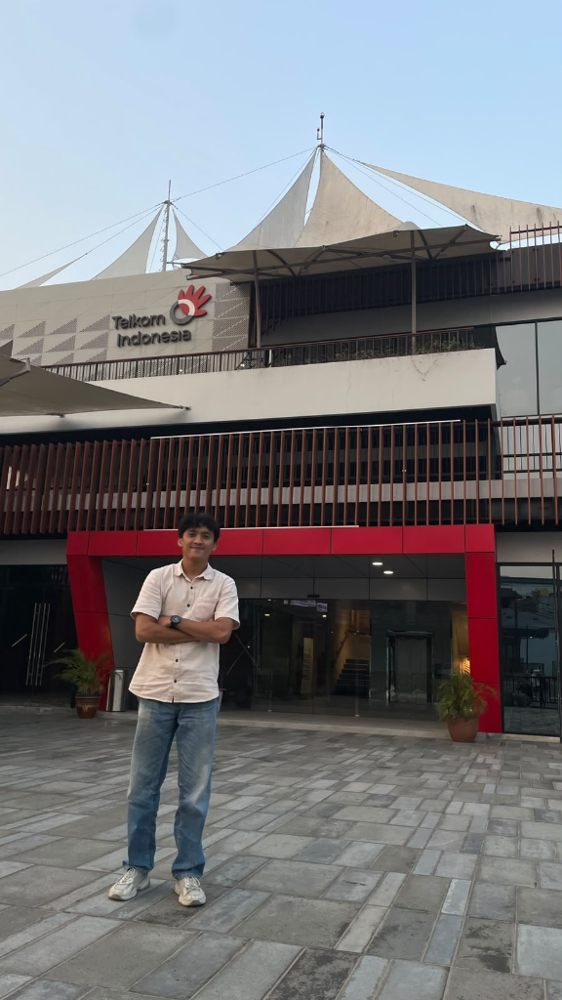

Muhammad Rizki Dwi Pratama
Mahasiswa S1 Teknik Informatika (Semester 7) di Fakultas Sains dan Teknologi, Universitas Ibnu Sina. Saat ini sedang menjalani magang industri di PT Telkom Indonesia, sekaligus aktif selama 3+ tahun mengajar bahasa Inggris di Yayasan Aldora Course.
Instruktur Basic English di Yayasan Aldora Course
Membina kemampuan berbicara & grammar dasar
Smt 1–6 Lulus & Smt 7 Magang Telkom
Nilai A Semantic Web & K3 Umum SAFEC
Visi & Sinergi Kompetensi
Perpaduan Teknologi Informasi & Komunikasi Bahasa InggrisSaya adalah mahasiswa Teknik Informatika di Universitas Ibnu Sina (UIS), Fakultas Sains dan Teknologi. Ketertarikan saya terhadap dunia rekayasa perangkat lunak dan arsitektur sistem komputasi berakar dari rasa ingin tahu yang mendalam terhadap pemecahan masalah (problem solving) berbasis teknologi modern.
Nilai tambah saya terletak pada perpaduan antara keahlian teknis logika komputasi dan kemampuan komunikasi bahasa Inggris. Pengalaman mengajar selama kurang lebih 3 tahun di Yayasan Aldora Course membiasakan saya dengan kesabaran, kemampuan komunikasi yang terstruktur, cara membimbing siswa dari nol, dan rasa tanggung jawab yang tinggi.
"Code is how we build modern digital solutions; English is how we communicate that value to the global world."
Nilai & Karakter Diri:
Analytical Thinking
Menganalisis kebutuhan sistem dan menyelesaikan persoalan komputasi dengan alur logika yang runtut dan rapi.
Clear Communication
Terbiasa mentransfer ilmu pengetahuan secara santun, terstruktur, dan mudah dipahami oleh berbagai audiens.
Patience & Mentoring
Kesabaran tinggi yang teruji selama 3 tahun membimbing siswa pemula hingga percaya diri berbahasa Inggris.
Continuous Learner
Semangat belajar mandiri yang tinggi dalam mengeksplorasi teknologi baru dan framework komputasi terkini.
Ringkasan Profil
Minat & Fokus Karir:
Pengajar Bahasa Inggris - Yayasan Aldora Course
Spesialisasi Level Basic | Pengabdian ~3 TahunDi Yayasan Aldora Course, saya bertanggung jawab membina para peserta didik yang memulai pembelajaran bahasa Inggris dari level paling dasar (Basic Level). Mengajar selama kurang lebih 3 tahun menuntut komitmen tinggi dalam menciptakan metode pengajaran yang interaktif, menumbuhkan keberanian siswa untuk berbicara, serta menanamkan pondasi tata bahasa yang kuat tanpa membuat siswa merasa jenuh atau tertekan.
Daily Speaking Drill
Membiasakan siswa melakukan percakapan sederhana sehari-hari dengan percaya diri dan pelafalan (pronunciation) yang tepat.
Fundamental Grammar
Membedah struktur kalimat dasar, Parts of Speech, Simple Present, Past, dan Continuous Tense secara aplikatif.
Gamified Learning
Memanfaatkan game interaktif, role-play simulasi situasi, dan kuis visual flashcard agar kelas selalu hidup dan menyenangkan.
Progress Assessment
Melakukan evaluasi kemajuan tiap murid secara berkala dan memberikan laporan perkembangan yang konstruktif.
Distribusi Fokus Pengajaran di Kelas:
Dampak & Capaian Pengajaran:
- Lebih dari 150+ Siswa berhasil menyelesaikan modul basic dan melanjutkan ke tingkat lanjut dengan percaya diri.
- Menciptakan kurikulum mini pendukung berupa Quick Conversation Sheet yang efektif digunakan untuk latihan speaking 10 menit tiap awal kelas.
- Mendapatkan apresiasi positif dari orang tua murid dan pihak Yayasan Aldora Course atas dedikasi dan konsistensi selama 3 tahun mengabdi.
Universitas Ibnu Sina (UIS) - Batam
Fakultas Sains dan Teknologi | Program Studi S1 Teknik InformatikaSebagai mahasiswa aktif di Fakultas Sains dan Teknologi Universitas Ibnu Sina, saya mendalami berbagai pilar esensial informatika modern. Kurikulum yang ditempuh menyeimbangkan antara pemahaman teoritis matematika komputasi dan implementasi praktikum rekayasa perangkat lunak.
Pemrograman Web & Mobile
Desain antarmuka responsif modern, integrasi API, manipulasi DOM dinamis, dan pengembangan web.
Sistem Basis Data (RDBMS)
Perancangan skema relasional, normalisasi data, query SQL tingkat lanjut, indexing, dan integritas data sistem.
Algoritma & Struktur Data
Efisiensi algoritma (Big O Notation), sorting, searching, linked lists, trees, dan logika problem solving komputasi.
Jaringan Komputer
Protokol TCP/IP, model OSI, konfigurasi routing dasar, keamanan data, dan arsitektur client-server.
Rekayasa Perangkat Lunak
SDLC (Agile & Waterfall), Unified Modeling Language (UML), pengujian perangkat lunak, dan dokumentasi sistem.
Etika Profesi & Keamanan
Integritas data, kepatuhan privasi, keamanan informasi, serta etika profesional di industri komputasi.
Linimasa Perjalanan Kampus:
Penerimaan Mahasiswa Baru S1 Teknik Informatika
Universitas Ibnu Sina (FST)Memulai studi dengan fondasi kalkulus informatika, logika pemrograman dasar, dan pengantar teknologi komputasi.
Pengembangan Kompetensi Inti & Praktikum Laboratorium
Fokus Pemrograman & DatabaseMengerjakan tugas praktikum mandiri dan tim, merancang aplikasi berbasis web, dan memanipulasi basis data relasional.
Sinergi EdTech & Praktik Pengajaran Bahasa
Fase SekarangMengintegrasikan pengalaman mengajar di Aldora Course ke dalam inovasi aplikasi media belajar digital (Educational Technology).
Radar Analisis Kompetensi
Keseimbangan Keterampilan IT & Bahasa InggrisGrafik interaktif menunjukkan sinergi kuat antara kemampuan coding teknis dengan kecakapan berbahasa internasional dan pedagogi mengajar.
Detail Tingkat Keahlian
Bahasa Inggris & Pengajaran:
Teknologi Informatika & Coding:
Stack & Tools:
Rekam Jejak Proyek & Praktikum Akademik
Perjalanan Terstruktur dari Semester 1 hingga Magang Industri Semester 7Magang Industri di PT Telkom Indonesia
Menjalani program magang kerja profesional di perusahaan telekomunikasi digital terdepan di Indonesia, PT Telkom Indonesia (Persero) Tbk. Mengaplikasikan pemahaman teknologi informatika dalam pemeliharaan infrastruktur jaringan, monitoring keandalan transmisi data, observasi arsitektur sistem korporasi, serta berkolaborasi dengan tim teknisi profesional dalam menjaga SLA (Service Level Agreement) pelanggan.
PT Telkom Indonesia
Telekomunikasi & JaringanKuliah Kerja Lapangan (KKL)
Penerjunan langsung ke dunia kerja dan instansi industri untuk meninjau secara nyata integrasi sistem informasi, arsitektur operasional divisi IT, observasi proses bisnis kerja nyata, dan penyusunan laporan evaluasi komprehensif.
Praktikum Semantic Web
Studi pemodelan web cerdas dan linked data. Mempelajari Resource Description Framework (RDF), Web Ontology Language (OWL), SPARQL query, dan perancangan ontologi pengetahuan sistem di Lab FST Universitas Ibnu Sina.
Pemrograman Berbasis Internet
Pengembangan aplikasi berbasis web secara komprehensif. Meliputi arsitektur client-server, perancangan antarmuka responsif, interaksi DOM dinamis, backend scripting PHP, integrasi basis data MySQL, dan manajemen session user.
Praktikum Hardware Dasar
Pendalaman praktis komponen fisik dan arsitektur perangkat keras komputer. Praktik perakitan PC dari nol, pengenalan motherboard, RAM dual-channel, power supply, setting BIOS/UEFI, dan teknik troubleshooting kerusakan hardware.
Praktikum Algoritma & Pemrograman II
Tingkat lanjutan logika pemrograman berstruktur dan efisiensi memori. Mempelajari fungsi & prosedur parameter, rekursif, manipulasi pointer, algoritma sorting lanjutan (Quick Sort, Merge Sort), searching, dan dasar OOP.
Praktikum Algoritma & Pemrograman I
Pondasi awal berpikir komputasi (computational thinking). Mempelajari perancangan diagram alir (flowchart), pseudocode, tipe data dasar, operator aritmatika & logika, percabangan (if-else, switch), serta perulangan (looping) dan array.
Sertifikasi & Lisensi Resmi
Dokumentasi Kompetensi Akademik Laboratorium & Pelatihan Profesional TerverifikasiSertifikat kelulusan resmi atas penyelesaian praktikum Semantic Web pada semester Gasal tahun akademik 2025/2026 di Universitas Ibnu Sina dengan predikat kelulusan tertinggi Sangat Memuaskan (Nilai A).
Sertifikasi kompetensi keselamatan dan kesehatan kerja (K3) industri meliputi pemahaman dasar peraturan K3, analisa risiko HIRADC & JSA, kesiapsiagaan darurat, penggunaan APD & APAR, dan praktik SIM K3.
Sertifikasi & Lisensi Tambahan
Dokumen sertifikat pelatihan kompetensi lainnya, workshop IT, dan sertifikasi keahlian bahasa Inggris sedang dalam proses persiapan dan akan diperbarui secara berkala pada bagian ini.
Akan Ditambahkan Berkala